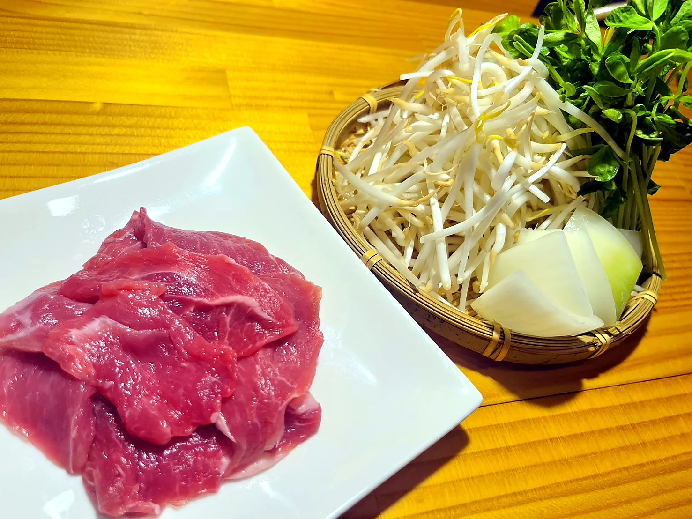

Menu
品よく、シンプルに。
生ラムの旨みを中心に、野菜、一品、オーブン料理、ご飯もの、ドリンクを揃えています。

ジンギスカンセット
- ジンギスカンセット
- 上ロースジンギスカンセット
- さくやジンギスカンセット
単品ラム肉
- 肉皿
- 上ロース
- タン 塩
- ヒレ 塩
- ソーセージ
- ハツ
- レバー 塩タレ
- リブフィンガー
野菜・一品
- 野菜盛り
- エリンギ
- 長ネギ
- ちぎりキャベツ
- ズッキーニ ガーリックオイル和え
- マッシュルーム ガーリックオイル和え
- 塩だれキャベツ
- 本日のお漬物
- チャンジャ
- 冷しトマト
- マッシュポテト
- 梅水晶
- 蒸しブロッコリーとタルタルソース
- クリームチーズとフルーツトマトのカナッペ
オーブン焼き・ご飯
- ラムチョップ香草パン粉焼き
- タンと野菜のアヒージョ
- アヒージョ用バケット
- 南魚沼産コシヒカリ ご飯
- 生卵
- とろろ
ドリンク
- 生ビール
- ヒューガルデンホワイト
- ノンアルコールビール
- 生レモンサワー
- 生グレサワー
- 南高梅サワー
- プレーンサワー
- ウーロンハイ
- 緑茶ハイ
- チューハイ
- 二階堂
- 黒霧島
- 白水
- ハイボール
- グラスワイン
- ボトルワイン
- コーラ
- ジンジャエール
- 烏龍茶
- 緑茶
- 100%ジュース
- 炭酸水
Reservation
予約はこちら
お電話、Instagram DM、メールにて承ります。